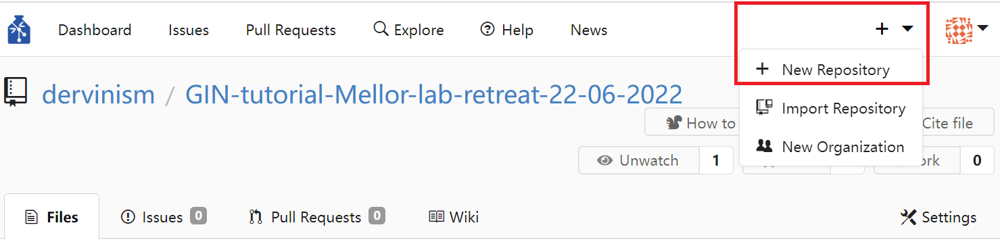
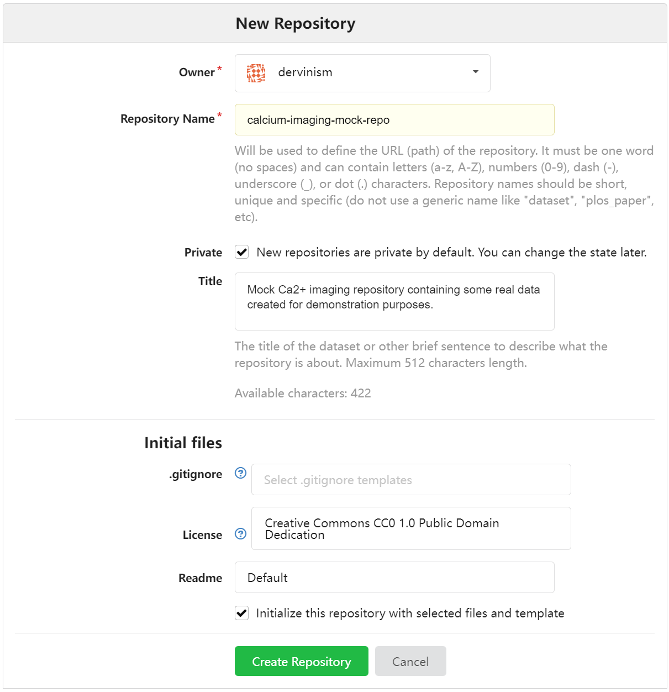
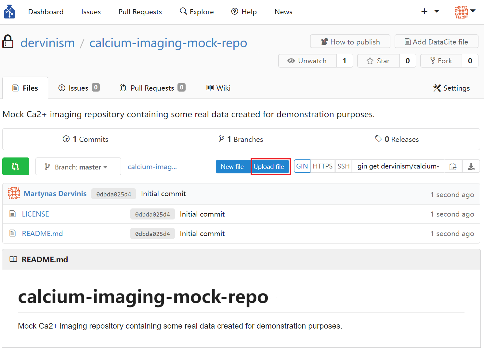

Bristol GIN for Calcium Imaging Data
Contents
Bristol GIN for Calcium Imaging Data#
Create GIN Account#
In order to be able to follow this tutorial, you need to have a GIN account either on Bristol GIN or on the public GIN service. GIN web interface documentation has it all explained here.
After creating the account, login to it by typing:
gin login
Download Mock Data#
We are going to download Ca2+ imaging data available in dervinism/calcium-imaging-mock-repo repository. To get the data, type in the lines below to your terminal:
gin get dervinism/calcium-imaging-mock-repo
cd calcium-imaging-mock-repo
gin get-content
This is part of the real Ca2+ imaging data. The imaging was performed in hippocampal pyramidal cells during Schaffer collateral stimulation. Dendrites at different cell locations were two-photon linescan imaged. More about the project that this data is coming from can be read in the README file. The data is organised into individual imaging/recording sessions named using number IDs. It is further subdivided into slices and cells. Processed data is places in the Analysed folder inside the MAT file. The raw data is located in two separate folders: Ephysdata for electrophysiology data and Imgdata for imaging data. README files located in calcium-imaging-mock-repo\Exp_001_SCstim_DiffLocations\201204 session folder give more detail about what sort of data is stored, variable names and their meaning, and other relevant information.
Set up Your Research Data Repository#
You should rename your repository, delete the .git folder located inside the repository root folder, and update your README file if needed. Once this is done, issue the command below:
gin init
This would intialise the local repository.
Upload Repository#
The next step is to create a remote repository with the same name and associate it with the local repository. You can simply do it by typing in your terminal:
gin add-remote your-repo-name gin:your-username/your-repo-name --default
In this case, the remote repository is going to be created since it does not exist. You can now type:
gin commit . -m "Initial commit"
gin upload .
The first command would record local changes with the local version control system. By doing so you create the image of your repository that can always be reverted to in the future in case the need to do so arises. When commiting local repository changes to your version control system you typically provide a concise message describing the changes. By convention, the message length should not exceed 50 characters. Dot means that the command is executed on the contents of the current working directory; therefore, make sure that you are inside the root folder of your repository when carrying out this action. The flag -m is used to pass the commit message. When you make new changes to the repository, whether editing text files or manipulating your data files, you should commit these changes periodically to your local versioning system. Finally, the upload command updates the remote instance of the repository with the changes that were commited locally up to this point.
Alternatively, you can create a repository using the GIN web interface. You do it by clicking the plus sign in the top menu and then clicking and chosing the New Repository option.
{kind=link}
Figure 1. Create Repository Using Web Interface
You should see the New Repository window where you enter the name of the repository and its description as shown below.
{kind=link}
Figure 2. Enter Repository Details Using Web Interface
Finally, you can upload files by clicking the blue Upload file button on the repository page.
{kind=link}
Figure 3. Upload Repository Files Using Web Interface
The limitation of using the web interface is that every time you update your remote repository (upload files), you will be limited to uploading 100 files at a time with each file being no larger than 10 gigabytes. Therefore, it is more effecient/effective to use the command line tools which have none of these limitations.
When you use the web interface, you can specify the commit message title (no more than 50 characters by convention) and the commit message body (no more than 72 characters by convention).
Remove Content of Your Local Research Data Repository#
One advantage of using GIN for your data repository mangement is that you do not need to keep duplicate repositories in order to prevent accidental detrimental changes to your main repository. One reason for that is having version control system. The other reason is that you can safely remove the content of your local repository and replace it with pointers to original files. As a result you can save space on your local hard-drive. To remove the local content type the following line in your terminal:
gin remove-content
Local files larger than 10 megabytes should be replaced by symbolic links. In case you want to remove the content of specific files only, you can type:
gin remove-content <absolute or relative path to file or folder>
For example, to remove particular raw research data from our calcium imaging data repository, we type:
gin remove-content Exp_001_SCstim_DiffLocations/201204/Slice_002/Cell_001/Ephysdata
gin remove-content Exp_001_SCstim_DiffLocations/201204/Slice_002/Cell_001/Imgdata
To simply restore the file content type in
gin get-content
If you no longer need to work on your repository and its remote copy is up to date with the local copy, you can simply delete the local repository copy altogether. You should always be able to restore your repository and all of its contents on your local machine by executing these commands in your terminal (replace the repository path as appropriate):
gin get dervinism/calcium-imaging-mock-repo
cd calcium-imaging-mock-repo
gin get-content
Convert Your Data to Standardised Format#
In order to increase your research data’s adherence to the FAIR principles of scientific data management and, in particular, to increase the interoperability of your data and chances of it being reused beyond its original purpose of collection, it is highly advisable to convert your data into one of the more popular standard file formats for neuroscience data. One such format is the Neurodata Without Borders (NWB) which is highly suitable for most of the neurophysiology data. Programming interfaces in both Matlab and Python are available for converting your data. Here we are going to provide explanations of how you can convert your data in both programming languages. While showing you examples of that, we will continue our focus on the calcium imaging data.
Convert to NWB Using Matlab#
Install MatNWB Toolbox#
To begin with the Matlab demonstration, you would need to install MatNWB toolbox. To download the toolbox, type in your terminal:
git clone https://github.com/NeurodataWithoutBorders/matnwb.git
Move the downloaded repository to the folder where you keep your code libraries. Then type the following in the Matlab command line:
cd matnwb
addpath(genpath(pwd));
generateCore();
You can now start using MatNWB. MatNWB interface documentation can be accessed here.
Record Metadata#
Inside the calcium imaging repository there is a folder with the Matlab file that you can execute in order to convert the data of one particular imaging/recording session into the NWB format. The script is located inside the Exp_001_SCstim_DiffLocations/201204/Slice_00/Cell_001/nwb folder in the file named convert2nwbCaImg.m and, if executed, it would convert the data stored in the files below:
Exp_001_SCstim_DiffLocations/201204/Slice_002/Cell_001/Analysed/201204__s2d1_004_ED__1 Botden_Analysed.mat
Exp_001_SCstim_DiffLocations/201204/Slice_002/Cell_001/Analysed/201204__s2d1_004_ED__1 Midden_Analysed.mat
Exp_001_SCstim_DiffLocations/201204/Slice_002/Cell_001/Analysed/201204__s2d1_004_ED__1 Topden_Analysed.mat
Initially, we start by recording the metadata associated with this experimental session. In this tutorial the metadata is divided into three types: Project, animal, and session metadata. The project metadata is common to all animals and experimental sessions and is defined by the part of the script below:
projectName = 'Intracellular Ca2+ dynamics during plateau potentials trigerred by Schaffer collateral stimulation';
experimenter = 'Matt Udakis';
institution = 'University of Bristol';
publications = 'In preparation';
lab = 'Jack Mellor lab';
brainArea = 'Hippocampus CA1-2';
greenIndicator = 'Fluo5f';
redIndicator = 'Alexa594';
The names of most of these parameters are self-explanatory. The green and red indicators are calcium indicator types named based on the light wavelength they emit. Next we define animal metadata. The reason to have this type of data separate is that multiple slices can be obtained from the same animal and used in separate imaging/recording sessions. The animal metadata is defined in the code snippet below:
animalID = 'm1';
ageInDays = 100;
age = ['P' num2str(ageInDays) 'D']; % Convert to ISO8601 format: https://en.wikipedia.org/wiki/ISO_8601#Durations
strain = 'C57BL/6J';
sex = 'M';
species = 'Mus musculus';
weight = [];
description = '001'; % Animal testing order.
Names of these parameters are again self-explanatory. Finally, we define the subject level metadata in the code below:
startYear = 2020;
startMonth = 12;
startDay = 4;
startTime = datetime(startYear, startMonth, startDay);
...
sliceNumber = 2;
cellNumber = 1;
imagingRate = 1/21; % A single linescan duration is 1sec with 20sec period in between linescans
lineRate = 1000.; % A number of lines scanned in a second.
sessionID = [animalID '_' year month day '_s' num2str(sliceNumber) ...
'_c' num2str(cellNumber)]; % mouse-id_time_slice-id_cell-id
sessionDescription = 'Single cell imaging in a slice combined with somatic current clamp recordings and the stimulation of Schaffer collaterals';
sessionNotes = ['201204 - Slice 2 Imaging 3 dendrite regions roughly in the SO SR and SLM regions ' ...
'Same line scan with same intensity of stim (2.3V) at different locations along the cell ' ...
'Ephys frames to match up with linescans ' ...
'Frames ' ...
'1-8 Bottom Den ' ...
'10-19 Middle Den ' ...
'22-28 Top Dendrite ' ...
'Missed a few of the imaging with the ephys so more Ephys traces than linescans ' ...
'by the end of the experiment the top or neuron started to bleb.'];
Again, these variables are mostly self-explanatory or commented in the code. The sessionNotes variable is coming from the Exp_001_SCstim_DiffLocations/201204/Slice_002/Cell_001/labbbook.txt file.
The way you define your metadata may be different. For example, you may have your own custom scripts that contain the metadata or you may store your metadata in files organised according to one of standard neuroscientific metadata formats like odML. Whichever your preference is, this part of the NWB conversion procedure will vary depending on the individual researcher.
The initialisation process is completed by intialising the Matlab NWB classes by calling
generateCore;
We start the conversion process by creating an NWBFile object and defining session metadata:
% Assign NWB file fields
nwb = NwbFile( ...
'session_description', sessionDescription, ...
'identifier', sessionID, ...
'session_start_time', startTime, ...
'general_experimenter', experimenter, ... % optional
'general_session_id', sessionID, ... % optional
'general_institution', institution, ... % optional
'general_related_publications', publications, ... % optional
'general_notes', sessionNotes, ... % optional
'general_lab', lab); % optional
Each file must have a session_description identifier and a session_start_time parameter. We then initialise the Subject object and the metadata it contains:
% Create subject object
subject = types.core.Subject( ...
'subject_id', animalID, ...
'age', age, ...
'description', description, ...
'species', species, ...
'sex', sex);
nwb.general_subject = subject;
Create Imaging Planes#
In order to store optical imaging data, we need to create imaging planes. First, we create OpticalChannel objects for each calcium indicator we use. The objects contain description and emission_lambda properties. In our case we use indicators Fluo5f and Alexa594 which have their maximum emission wavelengths at approximately 516 and 616 nanometers, respectively. These wavelength roughly correspond to green and red colours. Therefore, we name the channels based on the colours their corresponding calcium indicators emit.
green_optical_channel = types.core.OpticalChannel( ...
'description', ['green channel corresponding to ' greenIndicator], ...
'emission_lambda', 516.);
red_optical_channel = types.core.OpticalChannel( ...
'description', ['red channel corresponding to ' redIndicator], ...
'emission_lambda', 616.);
Another needed prerequisite is the Device object which is stored within the NWBFile object. Idealy, the Device object should have a description and manufacturer properties as defined below:
% Create the imaging device object
device = types.core.Device(...
'description', 'Two-photon microscope', ...
'manufacturer', 'Scientifica');
nwb.general_devices.set('2P_microscope', device);
We name the device as 2P_microscope but you are free to name it differently. Having created OpticalChannel and Device objects we can now create optical imaging planes corresponding to the green and red optical channels. We do this by executing the code below:
% Create imaging plane objects
imaging_plane_name = 'green_imaging_plane';
green_imaging_plane = types.core.ImagingPlane( ...
'optical_channel', green_optical_channel, ...
'description', 'The plane for imaging calcium indicator Fluo5f.', ...
'device', types.untyped.SoftLink(device), ...
'excitation_lambda', 810., ...
'imaging_rate', imagingRate, ...
'indicator', 'Fluo5f', ...
'location', brainArea);
nwb.general_optophysiology.set(imaging_plane_name, green_imaging_plane);
imaging_plane_name = 'red_imaging_plane';
red_imaging_plane = types.core.ImagingPlane( ...
'optical_channel', red_optical_channel, ...
'description', 'The plane for imaging calcium indicator Alexa594.', ...
'device', types.untyped.SoftLink(device), ...
'excitation_lambda', 810., ...
'imaging_rate', imagingRate, ...
'indicator', 'Alexa594', ...
'location', brainArea);
nwb.general_optophysiology.set(imaging_plane_name, red_imaging_plane);
The ImagingPlane object defines various properties of imaging planes used to generate the optical physiology data. Required properties include excitation_lambda (the wavelength used to excite calcium indicators in nm), indicator, location (brain area where the imaging plane is located), optical_channel (previously created OpticalChannel objects), and device (a link to the Device object defining the two-photon microscope). You may have noticed that the device property is set as a Softlink object which is used to link to an already existing NWB object (in our case) or to an object within an NWB file using a path. It is also useful to provide description, imaging_rate (the rate at which individual linescans are obtained), and any other properties you deem necessary. Such properties may include origin_coords defining physical location of the first element of the imaging plane relative to some reference point (e.g., bregma; defined by the reference_frame property) and grid_spacing to define the distance between individual pixels within the imaging plane.
Load Imaging/Recording Data#
The next part of the conversion script loads aggregated and preprocessed data stored inside the three MAT files in the Exp_001_SCstim_DiffLocations/201204/Slice_002/Cell_001/Analysed folder:
% Load data
dendrite = 'Bot';
data1 = load(['..\Analysed\' year month day '__s' num2str(sliceNumber) ...
'd' num2str(cellNumber) '_004_ED__1 ' dendrite 'den_Analysed.mat']);
dendrite = 'Mid';
data2 = load(['..\Analysed\' year month day '__s' num2str(sliceNumber) ...
'd' num2str(cellNumber) '_004_ED__1 ' dendrite 'den_Analysed.mat']);
dendrite = 'Top';
data3 = load(['..\Analysed\' year month day '__s' num2str(sliceNumber) ...
'd' num2str(cellNumber) '_004_ED__1 ' dendrite 'den_Analysed.mat']);
Three MAT files correspond to three imaged regions of interest (ROIs) of the neuron. The first region of interest, refered to as the bottom dendrite, is the pyramidal cell dendrite located in the Stratum Oriens (SO) of the CA1-2 region of the hippocampus. This information is available in the sessionNotes variable. The remaining two files refered to as middle and top dendrite data correspond to ROIs located in the Stratum Radiatum (SR) and Stratum Lacunosum Moleculare (SLM), respectively.
The table below describes the variables inside the files.
Variable |
Description |
|---|---|
ExpName |
The experiment ID. |
Line_nums |
A number of line scans for the experiment. |
Frame_nums |
A number of optical imaging frames (or electrophysiology recording sweeps) for the experiment. |
ROI_nums |
A number of regions of interest (ROIs) in the experiment. |
Ephys_Time |
Time points for electrophysiology recordings in ms. |
Ephys_Avg |
A membrane potential (mV) trace averaged over all sweeps for that ROI (see the lab book or |
Calcium_Avg |
An average linescan calcium trace (denoised dF/F) (averaged over all linescans for that ROI). |
Calcium_Time |
Time points for calcium imaging in ms. |
Calcium_deltaF |
Individual linescan calcium traces (denoised dF/F averaged across the width of the imaged dendrite). |
Ephys_data |
Raw membrane potential (mV) data. Recording sweeps include all ROIs (see the lab book or |
Flur5_denoised |
Individual linescan images of the calcium indicator Fluo5f data run through denoising algorithm (the image was cropped to the linescan region). Dimensions correspond to dendritic geometry (length and width). The length is also a time dimension. |
Alexa_denoised |
Individual linescan images of Alexa594 structure data run through denoising algorithm (the image was cropped to the linescan region). Dimensions have the same correspondance as for Flur5_denoised. |
imaging_vars |
Variables from ScanImage software for the two-photon acquisitions. |
Neuron |
A stitched image of the filled neuron recorded from (a 3-channel colourmap image). |
ROI_img |
An image of the ROI recorded from (a grayscale image). |
Table 1. Preprocessed Data
We are interested in Ephys_Time, Calcium_Time, Calcium_deltaF, Ephys_data, Flur5_denoised, Alexa_denoised, Neuron, and ROI_img and are going to work with these variables during the tutorial.
As part of laoding the data, we also convert the variables with fluorescence data to the regular array form. For that purpose the array dimensions of data inside cell arrays have to be equalised by appending data using NaNs. This is done by passing cell arrays to the appendLinescans function which then outputs regular 3D arrays:
% Append raw linescans so they have equal widths
data1.Analysed_data.Flur5_denoised = appendLinescans(data1.Analysed_data.Flur5_denoised);
data1.Analysed_data.Alexa_denoised = appendLinescans(data1.Analysed_data.Alexa_denoised);
data2.Analysed_data.Flur5_denoised = appendLinescans(data2.Analysed_data.Flur5_denoised);
data2.Analysed_data.Alexa_denoised = appendLinescans(data2.Analysed_data.Alexa_denoised);
data3.Analysed_data.Flur5_denoised = appendLinescans(data3.Analysed_data.Flur5_denoised);
data3.Analysed_data.Alexa_denoised = appendLinescans(data3.Analysed_data.Alexa_denoised);
...
Convert Fluorescence Data#
We convert the fluorescence data by invoking setTwoPhotonSeries function as shown below:
input.indicator = greenIndicator;
input.imagingPlane = green_imaging_plane;
input.imagingRate = imagingRate;
input.lineRate = lineRate;
input.data = data1.Analysed_data.Flur5_denoised;
input.dendriteID = 'bottom';
nwb = setTwoPhotonSeries(nwb, input);
...
This is repeated six times to process fluorescence data for the two different calcium indicators and the three different ROIs (2x3). The conversion function body code is shown below:
% Create image series
image_series = types.core.TwoPhotonSeries( ...
'description', [input.indicator ' linescans of the ' input.dendriteID ' dendrite'], ...
'imaging_plane', types.untyped.SoftLink(input.imagingPlane), ...
'starting_time', 0.0, ...
'starting_time_rate', input.imagingRate, ...
'scan_line_rate', input.lineRate, ...
'data', input.data, ...
'data_unit', 'a.u.', ...
'data_continuity', 'step', ...
'comments', ['This two-photon series contains ' input.indicator ' linescans of the ', ...
input.dendriteID ' (ROI) with the first dimension corresponding to time ', ...
'(or to individual linescans). Each linescan is 1-sec in duration with ', ...
'20-sec intervals between two linescans. The second dimension corresponds ', ...
'to individual lines spanning the length of the dendrite in the ROI. ', ...
'The third dimension corresponds to the width of the dendrite. ', ...
'Some linescans may contain appended NaN values to make ', ...
'widths of different linescans be equal within the same ROI.']);
% Name and add the two-photon series to the NWB file
if strcmpi(input.indicator, 'Fluo5f')
opticalChannel = 'Green';
elseif strcmpi(input.indicator, 'Alexa594')
opticalChannel = 'Red';
end
if strcmpi(input.dendriteID, 'bottom')
dendriteID = '1';
elseif strcmpi(input.dendriteID, 'middle')
dendriteID = '2';
elseif strcmpi(input.dendriteID, 'top')
dendriteID = '3';
end
nwb.acquisition.set(['TwoPhotonSeries' opticalChannel dendriteID], image_series);
The fluorescence data is added to the NWBFile object by creating a TwoPhotonSeries object. TwoPhotonSeries object has the following required properties: data, imaging_plane, and starting_time_rate. In our case, the data property contains the actual fluorescence data in a 3D array form with its dimensions described in [Table 1].(tutorials-caimage-convert2nwb-matlab-variable-table) (Flur5_denoised and Alexa_denoised variables). The imaging_plane property uses the SoftLink object to link to a particular ImagingPlane object (in our case there are two: green and red). The starting_time_rate property corresponds to the rate at which individual linescans were acquired. However, it does not need to be organised this way and can refer to a different data dimension. Therefore, it is important to use description, comments, and data_continuity properties to explain how the data is organised. For example, data containing individual linescans is not continuous and should be described as having the step quality by the data_continuity property. The property scan_line_rate describes the rate at which individual image lines were obtained and corresponds to the second dimension of the data.
Convert Change in Fluorescence Intensity Data#
In addition to converting the denoised fluorescence signal we are also going to convert the change in fluorescence intensity data (delta fluorescence). The delta F estimate is derived from the Alexa594 calcium indicator data or the red colour channel signal. It is stored using the TwoPhotonSeries object similar to the denoised raw fluorescence data as described in the previous subsection. We perform conversion for all three ROIs as shown below:
% Add optical physiology data: delta fluorescence
input.indicator = redIndicator;
input.imagingPlane = red_imaging_plane;
input.imagingRate = imagingRate;
input.lineRate = lineRate;
input.data = data1.Analysed_data.Calcium_deltaF';
input.dendriteID = 'bottom';
nwb = setDeltaFSeries(nwb, input);
...
The actual conversion is performed by the setDeltaFSeries function:
% Create image series
image_series = types.core.TwoPhotonSeries( ...
'description', ['Delta F data for the ' input.dendriteID, ...
' calculated based on ' input.indicator '.'], ...
'imaging_plane', types.untyped.SoftLink(input.imagingPlane), ...
'starting_time', 0.0, ...
'starting_time_rate', input.imagingRate, ...
'scan_line_rate', input.lineRate, ...
'data', input.data, ...
'data_unit', 'normalised', ...
'data_continuity', 'step', ...
'comments', ['This two-photon series contains delta F data calculated based on ', ...
input.indicator ' for the ' input.dendriteID ' (ROI) ', ...
'with the first dimension corresponding to time ', ...
'(or to individual linescans). Each linescan is 1-sec in duration with ', ...
'20-sec intervals between two linescans. The second dimension corresponds ', ...
'to individual lines spanning the length of the dendrite in the ROI. ', ...
'The data is averaged across the dendritic width.']);
% Name and add the two-photon delta F series to the NWB file
if strcmpi(input.dendriteID, 'bottom')
dendriteID = '1';
elseif strcmpi(input.dendriteID, 'middle')
dendriteID = '2';
elseif strcmpi(input.dendriteID, 'top')
dendriteID = '3';
end
nwb.acquisition.set(['TwoPhotonDeltaFSeries' dendriteID], image_series);
The delta F data has only two dimensions as the signal is averaged across the dendritic width (Calcium_deltaF variable described in Table 1).
All TwoPhotonSeries objects are stored within the acquisition data interface of the NWBFile object. However, this is not the only way of storing ROI fluorescence data. Alternatively, this type of data could be stored by defining an image mask used to extract ROI data from the wider fluorescence imaging data. If this is how you have obtained your own data, then it is worth consulting a different calcium imaging tutorial available here.
Convert Static Fluorescence Images#
As a final step of converting your calcium imaging data you may want to add static neuron and ROI images to your NWB file. Static colour images can be stored as RGBImage objects with the data property containing an array that has the spatial dimensions plus the third dimension corresponding to colour (three planes of RGB values; Neuron variable described in Table 1):
neuron_image = types.core.RGBImage( ...
'data', data1.Analysed_data.Neuron, ... % required: [height, width, colour]
'description', 'RGB image of the full neuron.' ...
);
Similarly, grayscale ROI images can be stored using GrayscaleImage objects (ROI_img variable described in Table 1):
bottom_dend_image = types.core.GrayscaleImage( ...
'data', data1.Analysed_data.ROI_img, ... % required: [height, width]
'description', 'Grayscale image of the bottom dendrite.' ...
);
...
Images are then grouped together using the Images object and added to the acquisition data interface of the NWBFile object as an ImageCollection object:
image_collection = types.core.Images( ...
'description', 'A collection of neuron and dendrite images.'...
);
image_collection.image.set('neuron_image', neuron_image);
image_collection.image.set('dendrite1_image', bottom_dend_image);
image_collection.image.set('dendrite2_image', middle_dend_image);
image_collection.image.set('dendrite3_image', top_dend_image);
nwb.acquisition.set('ImageCollection', image_collection);
This completes the conversion of the calcium imaging data into the NWB format.
Convert Intracellular Electrophysiology Recording Data#
The calcium imaging data during this experiment were acquired in parallel to simultaneous intracellular somatic current clamp recordings in the imaged neuron. The recording sweeps are stored in the Ephys_data variable described in Table 1. The variable contains recording sweeps corresponding to all three ROI imaging data. Note that the sweeps cover the first 950 ms of corresponding calcium imaging linescans. Analogously to the imaging data, we start by creating the recording device Amplifier_Multiclamp_700A:
% Create the recording device object
device = types.core.Device( ...
'description', 'Amplifier for recording current clamp data.', ...
'manufacturer', 'Molecular Devices');
nwb.general_devices.set('Amplifier_Multiclamp_700A', device);
Then follow this by creating the IntracellularElectrode object while providing any relevant information about it including the associated Device object:
electrode = types.core.IntracellularElectrode( ...
'description', 'A patch clamp electrode', ...
'location', 'Cell soma in CA1-2 of hippocampus', ...
'slice', ['slice #' num2str(sliceNumber)], ...
'device', types.untyped.SoftLink(device));
nwb.general_intracellular_ephys.set('icephys_electrode', electrode);
Finally, we convert the intracellular current clamp recordings using the CurrentClampSeries object by passing data to the setCClampSeries function for all ROIs:
input.ephysTime = data1.Analysed_data.Ephys_Time;
input.nSweeps = nFrames;
input.data = data1.Analysed_data.Ephys_data;
input.imagingRate = imagingRate;
input.electrode = electrode;
input.dendriteID = 'bottom';
nwb = setCClampSeries(nwb, input);
...
The function code is given below:
...
current_clamp_series = types.core.CurrentClampSeries( ...
'description', ['Somatic current clamp recording corresponding to ', ...
'the initial part of the calcium imaging period ', ...
'at ' input.dendriteID ' dendrite.'], ...
'data', input.data(:,sweeps+1)', ...
'data_continuity', 'step', ...
'data_unit', 'millivolt', ...
'starting_time', 0., ...
'starting_time_rate', input.imagingRate, ...
'electrode', types.untyped.SoftLink(input.electrode), ...
'stimulus_description', 'N/A', ...
'timestamps', timestamps, ...
'comments', ['Somatic current clamp recording corresponding to ', ...
'the initial part of the calcium imaging period ', ...
'at ' input.dendriteID ' dendrite.', ...
'The first dimension corresponds to individual ', ...
'recording sweeps. The second dimension corresponds to ', ...
'individual sweep data samples. The associated timestamps ', ...
'variable provides timestamps for the second dimension. ', ...
'This variable has to be combined with starting_time and ', ...
'starting_time_rate variables to get absolute timestamps ', ...
'for each data point']);
nwb.acquisition.set(['CurrentClampSeries' dendriteID], current_clamp_series);
The CurrentClampSeries is similar to the TwoPhotonSeries object. The difference is that, while creating the former, we need to provide a link to the electrode object and, since there is no scan_line_rate property, we need to add the timestamps variable corresponding to the second dimension of the electrophysiology data (Ephys_Time and Ephys_data variables defined in Table 1, respectively).
Save NWB File#
We call the nwbExport function to save our data in the NWB format:
%% Save the converted NWB file
nwbExport(nwb, [sessionID '.nwb']);
Read NWB File#
Now if you want to open the NWB file that you just saved in Matlab, you can issue a command
nwb2 = nwbRead('m1_201204_s2_c1.nwb');
which will read the file passively. The action is fast and it does not load all of the data at once but rather make it readily accessible. This is useful as it allows you to read data selectively without loading the entire file content into the computer memory.
In order to access stored two-photon calcium imaging data stored inside TwoPhotonSeries objects, execute the code given below:
TwoPhotonSeriesGreen1 = nwb2.acquisition.get('TwoPhotonSeriesGreen1').loadAll.data;
Other properties can be accessed similarly by replacing the data property with a relevant property name (e.g., scan_line_rate).
Stored images can be accessed by issuing the following command, for example:
neuronImage = nwb2.acquisition.get('ImageCollection').image.get('neuron_image').loadAll.data;
Finally, voltage clamp data is accessible in a similar way to the TwoPhotonSeries objects. For example,
CurrentClampSeries1 = nwb2.acquisition.get('CurrentClampSeries1').loadAll.data;
will give you recording sweeps obtained while imaging the bottom dendrite.
Some metadata is often directly available as properties of the NWBFile object, like:
sessionDescription = nwb2.session_description;
Subject metadata is available via the command, for example:
animalID = nwb2.general_subject.subject_id;
More on reading optical physiology data stored in NWB files can be found in an external tutorial here.
Validate NWB File#
MatNWB does not provide its own NWB file validator. However, you can validate NWB files generated using Matlab in Python. For instructions on how to do it, refer to the corresponding PyNWB validation section of the tutorial.
Resources#
This section explained how you can use Matlab to convert your calcium imaging and accompanying current clamp data into NWB files. It is not an exhaustive overview of Matnwb toolbox optical physiology functionality. There are other potential use cases involving imaging in multiple neurons while simultaneously recording behavioural data, for example. There is a number of externally available tutorials covering some aspects of converting data obtained in optical physiology experiments to the NWB file format using Matlab:
Convert to NWB Using Python#
Install PyNWB#
To convert your extracellular electrophysiology data, you will need to install PyNWB first. To do so, type in your terminal:
pip install -U pynwb
Now you’re ready to start working with PyNWB. The full installation instructions are available here.
Validate NWB File#
For validating NWB files use command line and type in
python -m pynwb.validate m1_201204_s2_c1.nwb
in order to validate the file that was recently created. The output should be:
Validating m1_201204_s2_c1.nwb against cached namespace information using namespace 'core'.
- no errors found.
The program exit code should be 0. On error, the program exit code is 1 and the list of errors is outputted.
For more details on the validation process, refer to an external resource.
Note
This section is work in progress. Current priority!